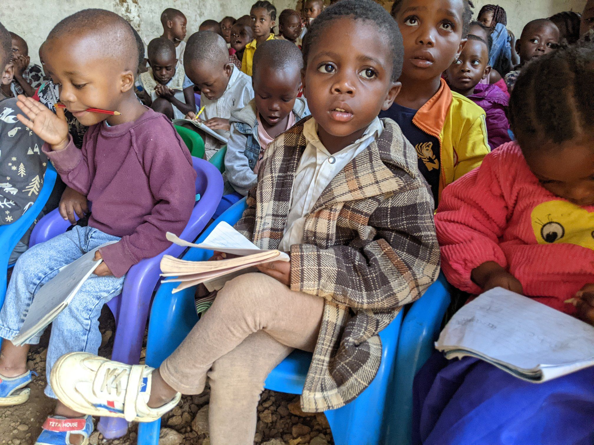

Global Alliance for Peace & Solidarity for Africa
Step for GAPSAfrica
Enter your daily steps and generate a branded social post to share your support for children in Nakivale Refugee Camp.

Social Post Generator
Generate Your Share Image
Enter your step count and create a branded social post to share your support for GAPSAfrica.
Your Share Image
Caption